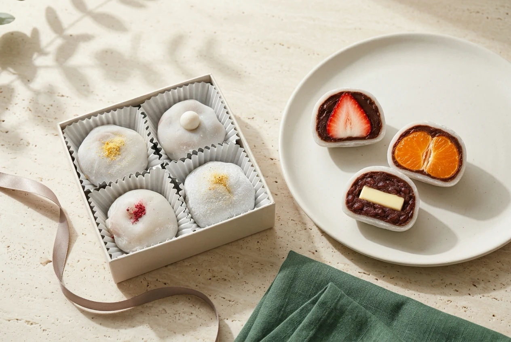
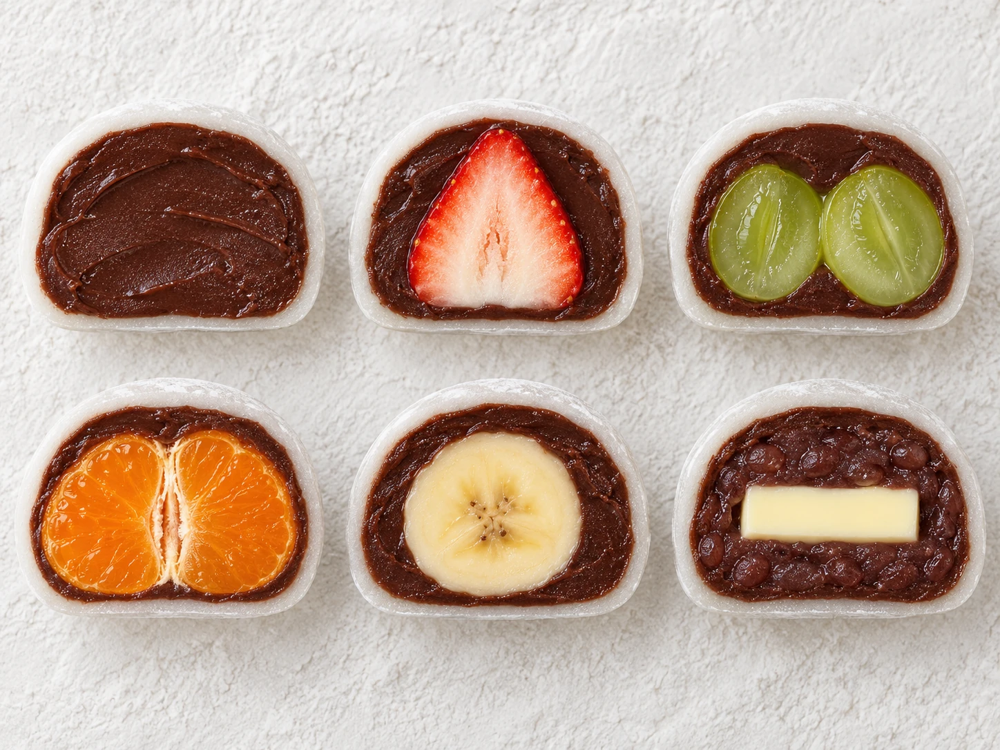
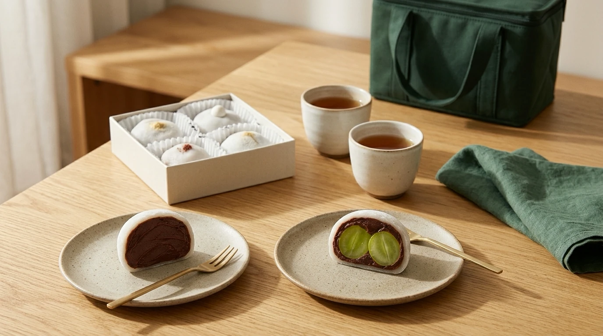

VERYGOOD JOURNAL · CHOCOLATE MOCHI & GIFT BOX GUIDE
How six handmade pavé chocolate mochi flavours—from fresh strawberry and mandarin to classic ang-butter—come together inside a custom 4-piece gift box.
If your only reference for mochi is a frozen scoop from the supermarket aisle, biting into a freshly wrapped chocolate mochi feels completely different. Instead of an icy filling, a thin, tender layer of glutinous rice dough wraps around smooth pavé (nama) chocolate ganache—often hugging whole fresh fruit or a slice of cool butter and sweet red bean paste.[1][3][20]
Because each piece weighs 80g to 85g+ and combines distinct textures inside one handheld bite, choosing which four flavours go into a gift box is half the fun.
KEY TAKEAWAY · SIX FLAVOURS, FREE 4-PIECE GIFT BOX
Choose any four pieces across Original Pavé (80g), Strawberry, Green Grape, Mandarin, Banana or Ang-Butter (85g+) to receive complimentary 4-piece gift-box packaging. Allow at least 24 hours before Melrose Park pickup.

Every flavour in our six-piece lineup starts with the same foundation—chewy glutinous rice skin paired with velvety pavé chocolate ganache[20]—yet falls into three clear flavour families so you can tailor every box to your guests.
FLAVOUR ARCHITECTURE · THREE TEXTURE FAMILIES IN SIX MOCHI
PURE GANACHE · 80G
Original Pavé Chocolate
Filled edge to edge with smooth pavé chocolate ganache[20] inside soft chewy rice skin for pure cocoa depth.
Best for dedicated dark chocolate lovers.
FRESH FRUIT · 85G+
Strawberry, Grape, Mandarin & Banana
Whole fresh fruit nested inside dark pavé ganache[1] so bright acidity, crisp pop or ripe creaminess lifts the chocolate.
Fruit weight varies naturally at 85g+ each.
SWEET-SAVOURY · 85G+
Ang-Butter Pavé Chocolate
Textured sweet red bean paste (classic Korean chapssaltteok)[3] paired with a cool butter slab and dark pavé ganache.
Rich, balanced pairing alongside warm tea.
Seeing all six cross-sections together makes curating a 4-piece gift box effortless. In the top row: Original Pavé (80g), Strawberry and Green Grape. In the bottom row: Mandarin, Banana and Ang-Butter (each 85g+).
For a balanced first-time gift box, try pairing one Original Pavé, two contrasting fruit pieces (such as Strawberry and Mandarin or Green Grape), and one Ang-Butter—giving your recipient pure ganache, bright fruit and sweet-savoury richness in one box.

HOW TO ORDER · 4-PIECE GIFT BOX VS. SINGLES
4-PIECE GIFT BOX · FREE BOX
Build a Custom Quartet
Choose any four pieces—including repeats. The price is simply the sum of your selected flavours, with 4-piece gift-box packaging included free.
SINGLES · FLEXIBLE QUANTITIES
Order Individual Pieces
Choose exact counts for casual snacking or larger spreads, with optional individual packaging available per piece for tidy desk drops or favours.
Because fresh fruit and pavé chocolate ganache are delicate chilled fillings, planning pickup timing and cold transport keeps the glutinous rice dough soft and the centres bright:
CHILLED MOCHI CARE · THREE ESSENTIAL HABITS
• Allow 24 hours notice: Please allow at least 24 hours before pickup in Melrose Park, Sydney so each flavour is freshly wrapped.
• Keep chilled at 5 °C or below: Bring an insulated cooler bag on warm Sydney days and refrigerate promptly.[7][24]
• Best enjoyed on the day: Enjoy on pickup day for peak softness and fresh-fruit brightness; recommended refrigerated storage is up to 3 days.
CHOCOLATE MOCHI · ALLERGEN DISCLOSURE & FSANZ GUIDANCE
Contains milk and soy. Made in a facility that also handles almonds, wheat, eggs, sesame and peanuts. Please check allergen requirements before gifting or ordering for someone with a food allergy.[23]

VERYGOOD CHOCOLATE · MELROSE PARK PICKUP · SYDNEY
Explore our six-flavour Chocolate Mochi collection for pre-arranged pickup in Melrose Park, Sydney—choose singles or build a custom 4-piece gift box with free box packaging—at least 24 hours ahead of your pickup slot.
[1] https://www.japan.travel/en/blog/unique-mochi-dishes-from-around-japan — JNTO — Unique Mochi Dishes from Around Japan
[3] https://english.visitkorea.or.kr/svc/contents/contentsView.do?vcontsId=231667 — Korea Tourism Organization — Sweet Rice Cake with Red Bean Filling (Chapssaltteok)
[7] https://www.foodstandards.gov.au/business/food-safety/transporting-food-safely — FSANZ — Transporting food safely
[20] https://www.valrhona.com/en/l-ecole-valrhona/discover-l-ecole-valrhona/chocolate-terminology/chocolate-emulsion — Valrhona — Chocolate emulsion
[23] https://www.foodstandards.gov.au/consumer/labelling/allergen-labelling — FSANZ — Allergen labelling for consumers
[24] https://www.foodstandards.gov.au/business/food-safety/2-hour-4-hour-rule — FSANZ — 2-hour / 4-hour rule